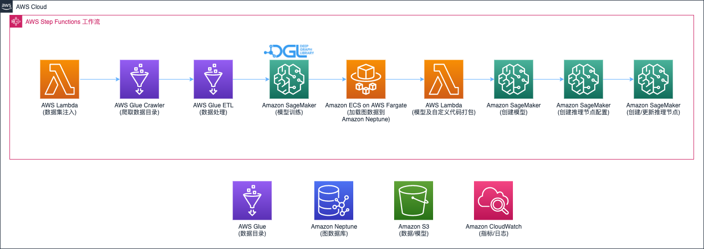
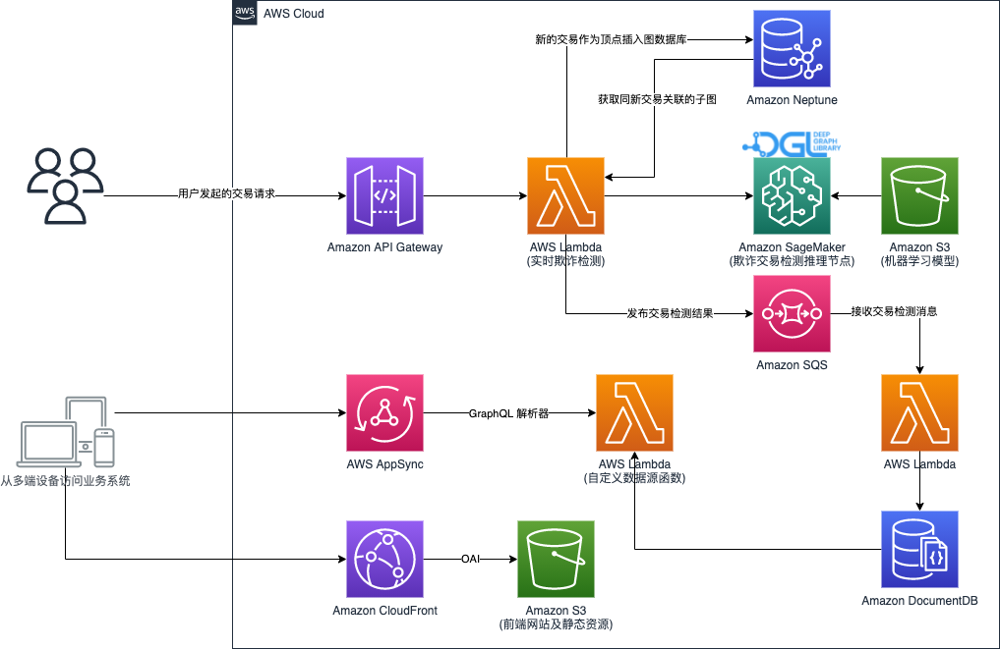

组件
数据处理及模型训练发布的流水线

解决方案使用 AWS Step Functions 工作流编排从IEEE-CIS数据集到图数据的处理、图神经网络模型训练，到推理接口的部署。详细工作流程如下，
- 使用 AWS Lambda 函数下载数据集到 Amazon S3 桶
- 执行 AWS Glue 爬网程序从数据集构建 Glue Data Catalog
- 执行 AWS Glue 作业对原始数据处理，将表格数据转换为图结构化数据，并写入到 S3 桶
- 调用 Amazon SageMaker 来训练基于 DGL 开发的图神经网络模型
- 模型训练之后，将所有转换后的图结构化数据导入图数据库 Amazon Neptune
- 将自定义推理代码同模型打包
- Amazon SageMaker 中创建模型，推理配置，部署推理节点
实时反欺诈检测及业务监控系统

实时反欺诈检测
解决方案按照以下步骤实现实时反欺诈检测，
- 将在线交易请求数据进行预处理，转换为图数据结构
- 将图数据（顶点和边）插入到图数据库 Neptune
- 以当前交易作为顶点在图数据库中查询有2度关联的交易顶点子图集
- 将查询的子图数据发送到推理节点进行推理预测，得到该笔交易的欺诈可能性。把交易信息及欺诈预测结果发送到 Amazon SQS 队列，最终把交易欺诈的可能性返回
交易欺诈监控系统
解决方案使用以下服务实现交易欺诈监控系统，
- 使用 AWS Lambda 函数 读取 SQS 队列中的在线交易，并存储在 Amazon DocumentDB
- 通过 AWS AppSync 提供在线交易的统计接口
- 监控系统的Web程序部署在 Amazon S3 ，并通过 Amazon CloudFront CDN 网络分发
- 通过 AWS Step Functions 工作流模拟在线交易的提交，将 IEEE-CIS 中的测试数据集 提交到在线反欺诈推理接口
- Amazon API Gateway 为 AppSync 接口提供认证接口及发起模拟在线交易的请求